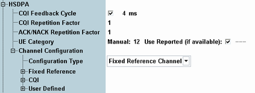

HSDPA Settings
This section contains parameters for HSDPA configuration, e.g. the configuration of the transport channel HS-DSCH.
All settings require option R&S CMW-KS401, user-defined channel configuration requires also R&S CMW-KS411.
Alternatively use the wizard for the quick configuration of the automatic HSDPA maximum throughput settings, see "Using the WCDMA Wizards".

HSDPA settings
For parameter descriptions, refer to the subsections.
Contents